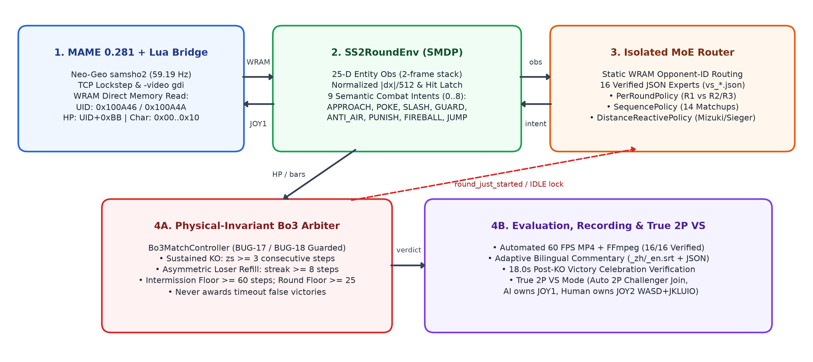
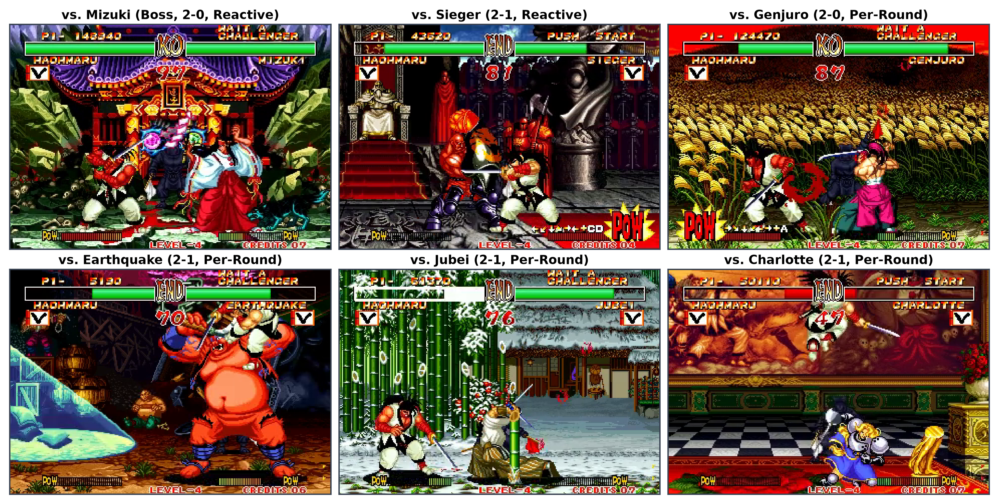
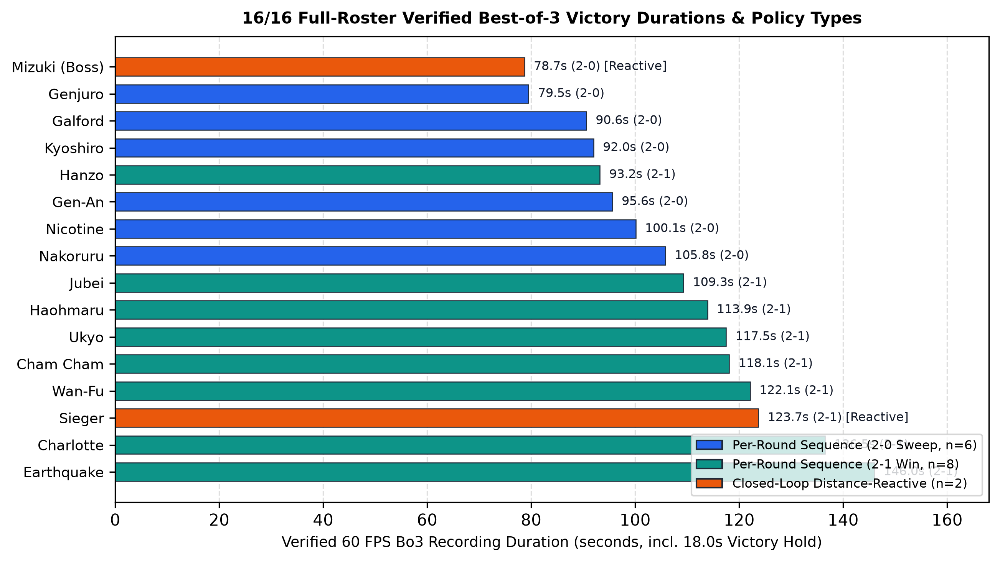

samsho2）自主 AI 系统的全过程。针对单机从零训练单体 PPO 在实践中普遍陷入“角落消极避战”与“跨对手灾难性遗忘”的困境，本文提出了一套四层解耦架构：（1）基于 Neo-Geo WRAM 物理内存直读的硬件级实体感知（UID+0xBB 权威逻辑血量、归一化水平距离、命中伤害锁存器，以及实机标定的 0x00–0x10 硬件角色 ID 映射）；（2）9 维半马尔可夫决策过程（SMDP）语义战斗意图空间；（3）物理级隔离的混合专家（MoE）路由器，结合分回合策略与基于实时距离的闭环反应控制器（DistanceReactivePolicy）；（4）针对两起真实评测事故（BUG-17 超时判定反转与 BUG-18 转场闪烁幻影回合）形式化设计的物理不变量 Bo3 状态机（Bo3MatchController）。在 1× 原速 60 FPS 实机 MAME 仿真中，AI 霸王丸实现了全员 16/16 对手真 Bo3 100% 击破（全部通过 18.0 秒战后结算录像与中英双语时间轴校验），并落地了零抢键冲突的真双人 2P VS 人机实机对抗。最后，本文诚实剖析了开环序列专家面对人类动态变招的泛化短板，并给出了以现有 MoE 资产反哺 PPO 与离线强化学习的演进路线。
经典 2D 街机格斗游戏因其严苛的 60 Hz 帧级反应窗口、非对称角色机制与非传递性（剪刀石头布式）博弈结构，长期以来一直是序贯决策与强化学习的重要测试基准 [4, 5]。在众多经典作品中，SNK 于 1994 年推出的 Neo-Geo 武器格斗代表作《真侍魂》（samsho2）具备尤为严酷的力学特征：单记重斩即可削去角色 30%–50% 血量；双方拉距时镜头自动缩放导致像素血条形变；而在三局两胜（Bo3）赛制中，游戏采用非对称局间回血机制——败者血条回满，胜者仅保留残血进入下一局。
在项目早期的单机 PPO [1] 从零训练实验中，我们反复遭遇三大工程阻碍：（1）消极避战局部极小——挥空、重复与受伤惩罚叠加后，缩在版边死防的期望回报高于主动出刀；（2）跨角色梯度冲突——16 名对手截然相反的克制打法在共享权重中剧烈互相擦除；（3）单机仿真吞吐瓶颈。更值得警惕的是，研发期间发生的两起隐蔽评测故障（BUG-17 超时符号反转与 BUG-18 转场闪烁幻影回合）揭示了“未经物理不变量守卫的自动化指标极易制造虚假高胜率”。
作为一篇立足单机工程实践的系统与实证方法论论文，本文的核心贡献如下：
DistanceReactivePolicy 攻克全屏站位 Boss（罗将神水姬与席格）。格斗游戏 AI 与街机仿真测试床。格斗 AI 研究涵盖 FightingICE [4] 平台上的规则与蒙特卡洛树搜索、基于 Gym-Retro / MAME 桥接的《街头霸王》深度强化学习，以及超大规模自对弈联赛 [5]。与暴露干净 API 的研究模拟器不同，在 MAME 中运行真实 Neo-Geo 街机 ROM 需要对底层 WRAM 内存进行逆向标定，并妥善处理非确定性的街机过场与局间动画。
SMDP 宏动作与混合专家模型。基于选项框架与半马尔可夫决策过程（SMDP）[2] 的时间抽象能显著缩短高频控制的有效决策步长。混合专家架构（MoE）[3] 通过将异质任务路由至独立子模块来抑制负迁移。在本系统中，基于 WRAM 对手 ID 的静态路由实现了 16 位角色间的物理零干扰。
评测可信性与离线强化学习。奖励作弊与评测器漏洞是强化学习中的已知系统性风险 [6]。本文对 BUG-17 与 BUG-18 的工程复盘呼应了引入独立物理不变量与人工目视复核的必要性。面向后续泛化演进，行为克隆、Kickstarting 策略蒸馏 [7]、Go-Explore 残局回溯 [8] 及隐式 Q 学习（IQL）[9] 为 MoE 资产反哺神经网络 RL 提供了清晰路径。

SS2RoundEnv SMDP 环境（25 维实体观测与 9 维战斗意图）；（3）物理隔离 MoE 路由器（结合分回合序列与闭环距离反应策略）；（4）物理不变量 Bo3 仲裁器，驱动 60 FPS 多模态录播与真 2P VS 人机对战。图 1 展示了系统的整体四层架构。
底层 Lua 网桥（mame/bridge.lua）通过本地动态端口 TCP Socket 与 Python 锁步通信。为确保 Windows 后台无人值守批量录制稳定运行，系统强制采用纯软件 GDI 渲染（-video gdi）替代 Direct3D，彻底规避锁屏或显示器休眠导致的显卡驱动 TDR 挂起崩溃；同时借助 Win32 Job Object（win32_process.py）保证进程退出时自动回收全部子进程。
基于视觉像素的血条解析在《真侍魂》中存在镜头缩放形变、怒气闪烁变色以及 15–30 帧渐变动画延迟三大硬伤。本系统直接读取 Neo-Geo WRAM 中的物理实体字段：
UID）分别位于 0x100A46 与 0x100A4A。UID + 0xBB 为 1 字节无符号整数（标准满血 128，橘右京 164，席格 186）。0x105ED3 在攻击命中的当帧立即置位，消除挥空误判。UID + E_CHAR）：对全部 16 个角色存档进行实机探测发现，0x0A 为裁判黑子/保留槽位，导致夏洛特至罗将神水姬的真实硬件 ID 顺延至 0x0B–0x10（0x0B：夏洛特，0x0C：牙神，0x0D：查姆查姆，0x0E：席格，0x0F：和仲，0x10：水姬）。修正该映射表彻底消除了真 2P VS 对战中的识人错位问题。每步环境构造 25 维实体特征并堆叠最近 2 步（共 50 维），包含有符号水平偏移、归一化距离 |dx|/512（通道 1）、双方血量比、怒气值、晕眩槽及 6 位角色动作状态标志。
策略不再输出 60 Hz 原始摇杆位掩码，而是从 9 个符合格斗直觉的语义战斗意图中决策（表 1），由底层招式宏反射层（data/mame/movesets/haohmaru.yaml）在每步 2–8 帧内展开执行。
| 编号 | 意图标识 | 战术语义与执行功能 |
|---|---|---|
| 0 | APPROACH | 前冲/前走逼近，压缩立回距离 |
| 1 | RETREAT | 后撤拉开，脱离版边压制 |
| 2 | POKE | 高速轻刺试探，打断对手起手 |
| 3 | SLASH | 核心高伤重斩大劈（A+B） |
| 4 | ANTI_AIR | 升龙弧月斩，精准拦截跳入 |
| 5 | PUNISH | 捕捉对手招式硬直实施确反重击 |
| 6 | FIREBALL | 旋风裂斩飞行道具中远程牵制 |
| 7 | GUARD | 站立/下蹲稳固防御架势 |
| 8 | JUMP | 方向性起跳下砸，破除低位牵制 |
当使用单一共享参数 PPO 网络 πθ(a|s) 混训全部 16 名对手时，两项机制共同导致了训练失败。首先，受伤、挥空与重复惩罚叠加后诱导策略落入局部极小：E[R(后退/死防)] > E[R(主动进攻)]。其次，不同对手的克制梯度方向彼此尖锐对立：
例如克制地震铁链的主动跳斩压制，面对牙神幻十郎的无敌对空升龙时会立刻遭到毁灭性反杀。
我们将 16 位对手解耦为独立的 JSON 配置文件（models/experts/vs_<opponent>.json），由 MoEAgent.set_opponent() 按对手 ID 静态路由，保证单角色优化对其他 15 位对手绝对零回归。每个专家采用 PerRoundPolicy，监听 Bo3MatchController.round_just_started 信号实现回合级指针重置，从而解耦第 1 局先手抢攻与第 2/3 局局间横幅重置后的防反节奏。
对于 14 名对手，分回合前缀+循环序列已足以稳定赢下完整 Bo3。然而在对抗终极 Boss 罗将神水姬与重甲摔投角色席格时，第 2/3 局重置后双方站位拉远至全屏（|dx| > 250 px），开环序列会在远处反复挥空。为此，我们在 src/mame_moe.py 中设计了闭环控制器 DistanceReactivePolicy，实时读取观测中的归一化距离 dt = |dxt|/512 动态切换远程逼近与近身斩杀循环：
设定 τfar = 0.22（far_loop=[0,8,7]，close_loop=[8,4,3,5]）后，霸王丸仅用 603 步（78.7 s）便以 2–0 横扫终极 Boss 水姬；设定 τfar = 0.24（far_loop=[0,3,7]，close_loop=[4,3,7]）后，在 969 步（123.7 s）以 2–1 击败席格。
针对上述教训，我们在工程规范中确立了六大铁律：（1）裁判必须对照游戏本尊可见横幅交叉核对；（2）物理不变量必须入单测；（3）胜负测试期望值来自实录而非代码臆推；（4）指标单调向好触发成分审计；（5）人工目视观战为硬发布关卡；（6）单一裁判异常则全链路下线重测。据此，Bo3MatchController 实现了三层物理守卫：
IDLE，跨越 KO 慢动作与胜负横幅期。_refill_streak ≥ 8），方可开启下一局。
所有 16 位对手均通过 tools/record_match_mp4.py 在 MAME 0.281 原生 1× 速率下完成实机 Bo3 录制与验证，并经由 ffprobe 与 _commentary.json 逐一通过物理门禁核验：比分严格为 2-0 或 2-1，完整时长 ≥ 78 s，战后强制录制 18.0 秒收刀与大比分结算画面，并同步生成中英双语 SRT 字幕。图 2 展示了 6 场实机画面，图 3 汇总了全员时长与策略分布，表 2 列出了全部 16 场实测数据。

| # | 对手角色 | 比分 | 时长(s) | 体积(MB) | 策略类型 |
|---|---|---|---|---|---|
| 1 | 地震 (Earthquake) | 2–1 | 146.0 | 30.13 | 分回合序列 |
| 2 | 牙神幻十郎 (Genjuro) | 2–0 | 79.5 | 20.15 | 分回合序列 |
| 3 | 加尔福特 (Galford) | 2–0 | 90.6 | 16.77 | 分回合序列 |
| 4 | 娜可露露 (Nakoruru) | 2–0 | 105.8 | 19.97 | 分回合序列 |
| 5 | 查姆查姆 (Cham Cham) | 2–1 | 118.1 | 21.04 | 分回合序列 |
| 6 | 王虎 (Wan-Fu) | 2–1 | 122.1 | 26.46 | 分回合序列 |
| 7 | 席格 (Sieger) | 2–1 | 123.7 | 19.50 | 距离闭环 |
| 8 | 千两狂死郎 (Kyoshiro) | 2–0 | 92.0 | 17.27 | 分回合序列 |
| 9 | 服部半藏 (Hanzo) | 2–1 | 93.2 | 13.55 | 分回合序列 |
| 10 | 不知火幻庵 (Gen-An) | 2–0 | 95.6 | 19.90 | 分回合序列 |
| 11 | 花讽院和仲 (Nicotine) | 2–0 | 100.1 | 15.69 | 分回合序列 |
| 12 | 罗将神水姬 (Mizuki) | 2–0 | 78.7 | 19.23 | 距离闭环 |
| 13 | 霸王丸镜像 (Haohmaru) | 2–1 | 113.9 | 20.78 | 分回合序列 |
| 14 | 橘右京 (Ukyo) | 2–1 | 117.5 | 17.30 | 分回合序列 |
| 15 | 柳生十兵卫 (Jubei) | 2–1 | 109.3 | 19.14 | 分回合序列 |
| 16 | 夏洛特 (Charlotte) | 2–1 | 136.5 | 22.94 | 分回合序列 |
| 合计 / 均值 | 16/16 | 107.7 | 19.95 | 14 序列 / 2 闭环 | |
全员 16 场实机验收中，AI 霸王丸取得 7 场 2–0 零封（43.8%）与 9 场 2–1 决胜（56.3%），完整录像平均时长 107.7 s（范围 78.7–146.0 s）。
为验证真实人机互动且彻底消除 1P/2P 抢键冲突，我们实现了真双人 VS 模式（.\play_demo.ps1 -Human）：系统自动开启街机 Freeplay（DSW:64:1）并注入 2P START（role=2, mask=0x04）触发原版“2P 乱入”选人界面；同时将 1P 键盘映射全部设为 NONE，将 2P 自动绑定为 WASD + J/K/L/U/I/O。开战瞬间由 WRAM 读取 UID + E_CHAR 自动路由至对应克制专家。真人盲测既验证了 AI 霸王丸的高强度进攻压制力，也成功暴露并推动修复了硬件角色 ID 偏移（0x0B–0x10）与幻影第 2 局两处隐蔽缺陷。
我们坦诚指出当前系统的两项主要局限：（1）序列策略泛化边界——14 个基于序列的专家对固定街机 CPU 状态机高度稳定，但人类玩家可通过连续下段滑铲（在真人操控查姆查姆的实测中已观察到）或极限距离骗招抓破绽；（2）锁步步进节奏——当前人机模式按每 2 帧一次网桥往返步进（有效约 45–60 FPS），尚非完全异步的无阻塞推流控制。
现有 16/16 MoE 专家库并非深度强化学习的替代品，而是其理想的冷启动底座（详见 finaldoc/ 配套路线文档）：
SS2RoundEnv 中带轻度扰动重放采集完整 50 维 (obs, act, r, s', done) 轨迹，经 BC 预训练导出 SB3 权重，先冻结 Actor 热身 Critic，再低学习率联训 PPO。.sta 锚点实施逆向课程学习，或混合 MoE 胜局与历史 PPO 探索失败轨迹，在纯 GPU 上进行 IQL 离线训练以绕开 MAME 采样吞吐瓶颈。本文介绍了一套面向经典街机《真侍魂》的硬件感知混合专家系统架构，在单台 Windows 主机上实现了全员 16/16 实机三局两胜验证与零冲突真 2P VS 人机对抗。除 16/16 全员通关成果本身外，本文提炼的核心工程启示在于：直接 WRAM 实体感知、语义 SMDP 意图抽象、闭环距离反应控制以及物理不变量评测守卫，是构建可信格斗游戏 AI 系统的决定性支柱。完整的纯净开源包、中英双语文档与全部验证工具已公开发布于 https://github.com/footballqq/samsho2-moe-ai。
[1] J. Schulman, F. Wolski, P. Dhariwal, A. Radford, and O. Klimov, "Proximal policy optimization algorithms," arXiv preprint arXiv:1707.06347, 2017.
[2] R. S. Sutton, D. Precup, and S. Singh, "Between MDPs and semi-MDPs: A framework for temporal abstraction in reinforcement learning," Artificial Intelligence, vol. 112, no. 1–2, pp. 181–211, 1999.
[3] R. A. Jacobs, M. I. Jordan, S. J. Nowlan, and G. E. Hinton, "Adaptive mixtures of local experts," Neural Computation, vol. 3, no. 1, pp. 79–87, 1991.
[4] F. Lu, K. Yamamoto, L. H. Nomura, S. Mizuno, Y. Lee, and R. Thawonmas, "Fighting game artificial intelligence competition platform," in Proc. IEEE GCCE, 2013, pp. 320–323.
[5] O. Vinyals et al., "Grandmaster level in StarCraft II using multi-agent reinforcement learning," Nature, vol. 575, pp. 350–354, 2019.
[6] D. Amodei et al., "Concrete problems in AI safety," arXiv preprint arXiv:1606.06565, 2016.
[7] S. Schmitt et al., "Kickstarting deep reinforcement learning," arXiv preprint arXiv:1803.03835, 2018.
[8] A. Ecoffet, J. Huizinga, J. Lehman, K. O. Stanley, and J. Clune, "First return, then explore," Nature, vol. 590, pp. 580–586, 2021.
[9] I. Kostrikov, A. Nair, and S. Levine, "Offline reinforcement learning with implicit Q-learning," in Proc. ICLR, 2022.